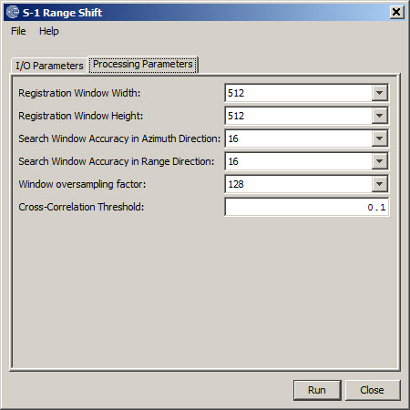

Sentinel-1 Range Shift
This opaerator follows the Backgeocoding
operator in the TOPS InSAR processing chain. It first estimates a
constant range offset for the whole sub-swath of the split S-1 SLC
image using incoherent cross-correlation. The estimation is done for
each burst using a small block of data in the center of the burst. The
estimates from all bursts are then averaged to get the final constant
offset for the whole image.
The operator then performs shift in range
direction for every burst using the offset computed above with a phase
ramp method in frequency domain.
Input
- The input to this operator is the resulting product from the
Backgeocoding operator. It is the co-registered master and slave images
for the same
sub-swath and same polarization (e.g. IW1 -
VV).
Output
- The output of the operator are the co-registered master and slave
bands in I/Q format with the slave bands shifted by a small amount in
range direction.
Parameters Used
- Registration Window Width: Width of the sub-set of image used
for cross-correlation.
- Registration Window Height: Height of the sub-set of image used
for cross-correlation. Larger window generally implies accurate
estimation of the range shift and also means larger memory and longer
processing time.
- Search Window Accuracy in Azimuth Direction: The search accuracy
in azimuth direction for the maximum correlation. The search window
height is 2*Acc.
- Search
Window Accuracy in Range Direction: The search accuracy in range
direction for the maximum correlation. The search window width is
2*Acc. .
- Window Oversampling Factor: The oversampling factor for the
search window. The larger the factor, the better the achievable
accuracy, and the larger the computation cost.
- Cross-Correlation Threshold: Threshold
for normalized cross-correlation value. If the cross-correlation value
is greater than the threshold, then the estimated range offset is
considered valid, otherwise invalid.
